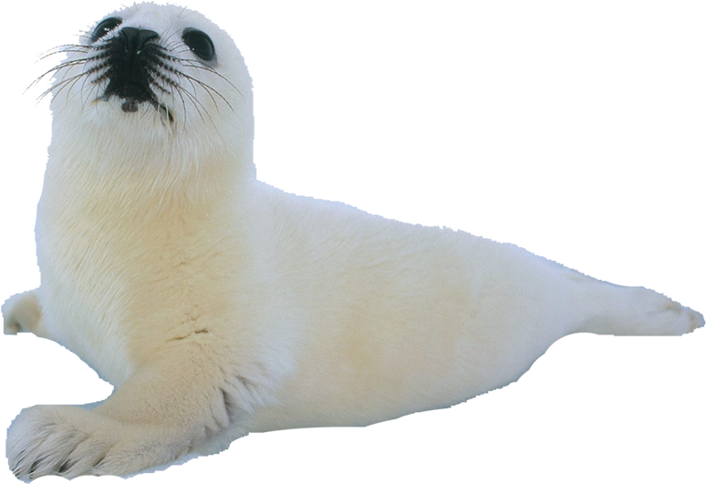

Seal hunting, also known as Sealing, is a commercial hunting of seals, primarily practiced in countries near the Arctic Circle. Countries that hunts the most seals are:
With Canada having the largest slaughter of marine mammals on the planet - just from hunting seals, as each spring, the Canadian government will authorize the hunting of baby seals.

According to the Humane Society of the United States, seals are killed mostly for their fur and then turned into different fashion accessories and seal oil. Fishermen will usually kill the seals on Canada's East Coast, primarily in Newfoundland, by either clubbing the seals in the head with wooden clubs, hakapiks (a weapon with a hook on a stick) or guns. With these methods, the seals would often die a painful, and slow death.
It should be known that harp seals are the primary targets of the Canadian commercial seal hunt, with 97% of the harp seals killed just under three months old.
The video contains graphic content, viewer discretion is advised.
As demonstrated in this video, the fishermen would set off to remote parts of the East Coast and spearing the heads of the seals or gunning them down.
There has been numberous organizations spreading awareness of the cruelty of seal hunting through making posts on social media or hosting publicity events.
| Organizations | Their website |
|---|---|
| IFAW | https://www.ifaw.org/ca-en |
| Atlantic Canada Anti-Sealing Coalition | https://www.antisealingcoalition.ca/ |
| Humane Society of the United States (HSUS) | https://www.hsi.org/issues/seal-slaughter/ |
| Seal Scotland | https://www.sealscotland.com/ |
If you support these organization, more seals will be saved! (Hover over the seal to see it dance in happiness!)
